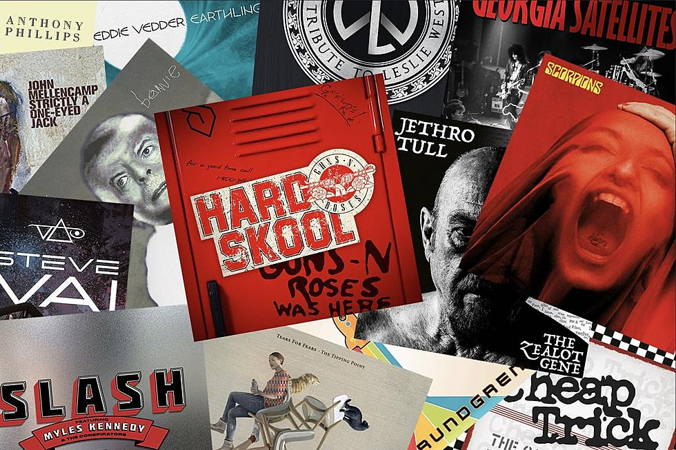

The History of the
New Year's Concert


Guns N' Roses fans are in for a heck of a year. Two major releases are on tap from the band, along with the fourth solo album by Slash. The guitarist confirmed plans for an expanded box set celebrating 1991's twin Use Your Illusion albums, which he said was due next summer. Before that, Guns N' Roses are releasing expanded editions of their digital single “Hard Skool” with bonus tracks on CD, vinyl and cassette. 4, meanwhile, extends Slash's nearly decade-long collaboration with Myles Kennedy and the Conspirators, and follows 2018's Living the Dream. David Bowie's previously unreleased album Toy finally arrives, two decades after its original proposed release. Elsewhere, John Mellencamp's new album Strictly a One-Eyed Jack features three collaborations with Bruce Springsteen. Jethro Tull are back with The Zealot Gene, after a studio break of nearly two decades. Rock Believer is Scorpions' first LP with former Motorhead drummer Mikkey Dee. Tears for Fears will release their first album in 17 years, and longtime Joe Bonamassa collaborator Beth Hart is paying tribute to Led Zeppelin. More information on these and other rock albums can be found below. Remember to follow this continuously updated list of new music releases for details on records issued throughout the year. Read More: 2022 New Music Releases | https://ultimateclassicrock.com/2022-new-music-releases/?utm_source=tsmclip&utm_medium=referral
Related PostsThe History of the
New Year's Concert